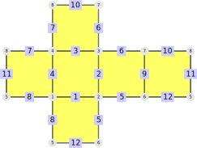

While chapter 4 described how to construct polygonal complexes from their incidence structure, this chapter describes how to access the pre-defined surfaces and complexes in this package.
The library serves two main purposes:
It is a collection of a large number of polygonal complexes that can be used to test theories. This collection will change over time when new surfaces are added. The collection can be accessed in this way by methods like AllSimplicialSurfaces (14.1-1).
For certain classes of polygonal complexes (like simplicial spheres) it provides a complete classification (within certain bounds). These lists are complete and can be the basis for theorems. They are presented in section 14.2.
Section 14.1 explains the main syntax that is used to access the library. It also contains the methods to access the complete collection of complexes.
Section 14.2 covers the specific classes of polygonal complexes that are (fully) contained in the package.
This section explains how all polygonal complexes that are stored in the library can be accessed. This is done by the method AllTwistedPolygonalComplexes (14.1-1), but it can also be restricted further, for example by AllSimplicialSurfaces.
The syntax of this call can be a bit confusing at first, since it was chosen to give the user much flexibility. We will start with a few examples. The call
gap> AllSimplicialSurfaces( NumberOfFaces, 3 ); [ simplicial surface (3 vertices, 6 edges, and 3 faces) ]
returns all simplicial surfaces from the library that have exactly three faces.
If we wanted all simplicial surfaces with 6, 8, or 9 edges, we could use
gap> AllSimplicialSurfaces( NumberOfEdges, [6,8,9] ); [ simplicial surface (3 vertices, 9 edges, and 6 faces), simplicial surface (4 vertices, 6 edges, and 4 faces), simplicial surface (3 vertices, 6 edges, and 3 faces), simplicial surface (3 vertices, 6 edges, and 4 faces) ]
It is even possible to combine these restrictions. To obtain all simplicial surfaces with 6 edges and 4 faces, we could use
gap> AllSimplicialSurfaces(NumberOfEdges, 6, NumberOfFaces, [4]); [ simplicial surface (4 vertices, 6 edges, and 4 faces), simplicial surface (3 vertices, 6 edges, and 4 faces) ]
In general, the arguments of AllSimplicialSurfaces alternate between a function and its result (or list of possible results). The strength of this syntax derives from its versatility - it is actually possible to use every conceivable function. Obviously, we can use functions defined by this package. For example, the following command returns all predefined tori:
gap> AllPolygonalComplexes( IsConnectedComplex, true, > IsOrientableComplex, true, EulerCharacteristic, 0 ); [ simplicial surface (3 vertices, 9 edges, and 6 faces), simplicial surface (9 vertices, 27 edges, and 18 faces), simplicial surface (4 vertices, 12 edges, and 8 faces) ]
Since it is tedious to always write true, there is a shortcut implemented that interprets "missing" results as true:
gap> AllPolygonalComplexes( IsConnectedComplex, IsOrientableComplex, EulerCharacteristic, 0 ); [ simplicial surface (3 vertices, 9 edges, and 6 faces), simplicial surface (9 vertices, 27 edges, and 18 faces), simplicial surface (4 vertices, 12 edges, and 8 faces) ]
If this is not sufficient, any user can define their own functions to search for specific surfaces. For example, if one was interested in all non-orientable simplicial surfaces such that one vertex in incident to every face, we could find them like this:
gap> HasCentralVertex := function(surface) > local intersect; > intersect := Intersection(VerticesOfFaces(surface)); > return Length(intersect) > 0; > end; function( surface ) ... end gap> AllSimplicialSurfaces(IsOrientableSurface, false, HasCentralVertex); [ simplicial surface (3 vertices, 6 edges, and 3 faces), simplicial surface (3 vertices, 6 edges, and 4 faces), simplicial surface (4 vertices, 12 edges, and 8 faces) ]
‣ AllTwistedPolygonalComplexes( fct1, res1, fct2, res2, ... ) | ( function ) |
‣ AllPolygonalComplexes( fct1, res1, fct2, res2, ... ) | ( function ) |
‣ AllTriangularComplexes( fct1, res1, fct2, res2, ... ) | ( function ) |
‣ AllPolygonalSurfaces( fct1, res1, fct2, res2, ... ) | ( function ) |
‣ AllSimplicialSurfaces( fct1, res1, fct2, res2, ... ) | ( function ) |
Returns: a list of polygonal complexes
Return all twisted polygonal complexes that are stored in the library with the desired properties.
The number of arguments can be arbitrarily long. In general the arguments have to come in pairs. The first argument in such a pair is a function and the second argument is either the result of that function or a list of accepted results. For example
gap> AllTwistedPolygonalComplexes( NumberOfVertices, [10,12], IsOrientableComplex, false );
returns all non-orientable twisted polygonal complexes with 10 or 12 vertices from the library.
To obtain the platonic solids a custom function has to be written:
gap> DegreeRegular := function( complex ) > local degrees; > > degrees := Set(FaceDegreesOfVertices(complex)); > return Size(degrees) = 1 and degrees[1] >= 3; > end;; gap> plat := AllPolygonalComplexes( IsPolygonalSurface, true, > EulerCharacteristic, 2, DegreeRegular, true, > IsConnectedSurface, true, IsClosedSurface, true);; gap> Size(plat); 5
For user convenience the following simplifications may be used:
If one of the more specific incarnations, like AllSimplicialSurfaces is called, the returned complexes will satisfy this additional requirement (in this case, they will be simplicial surfaces).
If the function in the first argument pair is NrOfFaces, it can be omitted. This is the only possible case in which the first argument is not a function.
If the second argument of a pair is omitted, it is assumed to be true. This is especially useful if the corresponding function is a property.
For example, the above command for the platonic solids can be simplified as follows:
gap> plat := AllPolygonalSurfaces( EulerCharacteristic, 2, DegreeRegular, > IsConnectedSurface, IsClosedSurface );; gap> Size(plat); 5
To get just the platonic solids with triangular faces, the following command may be used:
gap> plat := AllSimplicialSurfaces( EulerCharacteristic, 2, DegreeRegular, > IsConnectedSurface, IsClosedSurface );; gap> Size(plat); 3
To obtain just tetrahedron and octahedron, the number of faces can be restricted:
gap> plat := AllPolygonalComplexes( [4,8], > EulerCharacteristic, 2, IsConnectedComplex, IsClosedComplex );; gap> Size(plat); 2
In this section, different classifications of polygonal complexes are described. In most cases, these are infinite families. The documentation of each method explains in detail which part of the classification can be relied upon.
The general syntax is identical to the one from AllTwistedPolygonalComplexes or AllSimplicialSurfaces (14.1-1).
Currently, the following classes are contained in the package:
AllPlatonicSurfaces (14.3-1): all platonic solids
AllSimplicialSpheres (14.2-1): simplicial spheres without 3--waists (i.e. each of their vertex-edge-paths (8.1) of length 3 is the perimeter path (8.2) of a face).
AllGeodesicSelfDualSurfaces (14.2-2): geodesic self-dual surfaces
TODO needs nicer introduction and streamlining
‣ AllSimplicialSpheres( fct1, res1, fct2, res2, ... ) | ( function ) |
Returns: a list of simplicial surfaces
This method has the same syntax as AllTwistedPolygonalComplexes and AllSimplicialSurfaces (14.1-1), but is restricted to the simplicial spheres without 3--waists, i.e.
simplicial surfaces
that are homeomorphic to the sphere
each of their vertex-edge-paths (8.1) of length 3 is the perimeter path (8.2) of a face
Since this class is infinite, not all of them can be accessed. Currently, all of those surfaces with at most 28 faces are stored.
gap> AllSimplicialSpheres([4,8,10]); [ simplicial surface (7 vertices, 15 edges, and 10 faces), simplicial surface (4 vertices, 6 edges, and 4 faces), simplicial surface (6 vertices, 12 edges, and 8 faces) ] gap> AllSimplicialSpheres(NumberOfVertices, 8); [ simplicial surface (8 vertices, 18 edges, and 12 faces), simplicial surface (8 vertices, 18 edges, and 12 faces) ]
‣ AllGeodesicSelfDualSurfaces( fct1, res1, fct2, res2, ... ) | ( function ) |
Returns: a list of simplicial surfaces
This method has the same syntax as AllTwistedPolygonalComplexes and AllSimplicialSurfaces (14.1-1), but is restricted to the geodesic self-dual surfaces (TODO).
Since these are (probably) infinite, this method currently only gives access to the following surfaces:
The unique geodesic self-dual surface of degree 5
Both geodesic self-dual surfaces of degree 6
The two geodesic self-dual surfaces of degree 8 that arise from a normal subgroup
The geodesic self-dual surface of degree 9 that arises from the trivial subgroup
gap> AllGeodesicSelfDualSurfaces(); [ simplicial surface (6 vertices, 15 edges, and 10 faces), simplicial surface (3 vertices, 9 edges, and 6 faces), simplicial surface (9 vertices, 27 edges, and 18 faces), simplicial surface (21 vertices, 84 edges, and 56 faces), simplicial surface (42 vertices, 168 edges, and 112 faces), twisted polygonal surface (6 vertices, 24 edges, 16 faces, and 96 chambers), twisted polygonal surface (3 vertices, 12 edges, 8 faces, and 48 chambers), simplicial surface (190 vertices, 855 edges, and 570 faces), twisted polygonal surface (38 vertices, 171 edges, 114 faces, and 684 chambers), simplicial surface (10 vertices, 45 edges, and 30 faces) ]
‣ AllDiscs( fct1, res1, fct2, res2, ... ) | ( function ) |
Returns: a list of simplicial surfaces
This method has the same syntax as AllTwistedPolygonalComplexes and AllSimplicialSurfaces (14.1-1), but is restricted to simplicial discs. (TODO)
This list is very incomplete at the moment TODO.
gap> discs := AllDiscs();; gap> Length(discs); 87 gap> AllDiscs(function(surf) return 7 in FaceDegreesOfVertices(surf); end); [] gap> List(discs, UmbrellaPathsOfVertices);;
This section covers the platonic solids, i.e.
Tetrahedron (14.3-2).
Cube (14.3-3).
Octahedron() (14.3-4).
Dodecahedron() (14.3-5).
Icosahedron() (14.3-6).
Since it might be useful to see the incidence structure at a glance, every one of those methods features a net of the constructed polygonal structure. Those nets are constructed by the method DrawSurfaceToTikz (17.2-1).
It also contains the method AllPlatonicSurfaces (14.3-1) to find those platonic surfaces with specified properties.
‣ AllPlatonicSurfaces( fct1, res1, fct2, res2, ... ) | ( function ) |
Returns: a list of polygonal surfaces
This method has the same syntax as AllTwistedPolygonalComplexes and AllSimplicialSurfaces (14.1-1), but is restricted to the platonic surfaces:
Tetrahedron
Cube
Octahedron
Dodecahderon
Icosahedron
gap> AllPlatonicSurfaces(); [ simplicial surface (4 vertices, 6 edges, and 4 faces), polygonal surface (8 vertices, 12 edges, and 6 faces), simplicial surface (6 vertices, 12 edges, and 8 faces), polygonal surface (20 vertices, 30 edges, and 12 faces), simplicial surface (12 vertices, 30 edges, and 20 faces) ]
‣ Tetrahedron( ) | ( operation ) |
Returns: a simplicial surface
Return a tetrahedron as a simplicial surface. A tetrahedron is the platonic solid with four triangular faces.
gap> tetra := Tetrahedron();;
‣ Cube( ) | ( operation ) |
Returns: a polygonal surface
Return a cube as a polygonal surface. A cube is the platonic solid with six square faces.
gap> cube := Cube();;

‣ Octahedron( ) | ( operation ) |
Returns: a simplicial surface
Return an octahedron as a simplicial surface. An octahedron is the platonic solid with eight triangular faces.
gap> octa := Octahedron();;

‣ Dodecahedron( ) | ( operation ) |
Returns: a polygonal surface
Return a dodecahedron as a polygonal surface. A dodecahedron ist the platonic solid with 12 pentagon faces.
gap> dode := Dodecahedron();;
‣ Icosahedron( ) | ( operation ) |
Returns: a simplicial surface
Return an icosahedron as a simplicial surface. An icosahedron is the platonic solid with 20 triangular faces.
gap> ico := Icosahedron();;

This section contains all other pre-defined surfaces that are not covered in one of the other sections.
‣ OneFace( ) | ( operation ) |
Returns: a simplicial surface
Return a one-face as a simplicial surface. A one-face consists of one triangular face.
‣ Butterfly( ) | ( operation ) |
Returns: a simplicial surface
Return a butterfly as a simplicial surface. A butterfly consists of two triangular faces that share an edge.

‣ JanusHead( ) | ( operation ) |
Returns: a simplicial surface
Return a Janus-Head as a simplicial surface. A Janus-Head consists of two triangular faces that share three edges.
gap> janus := JanusHead();;
‣ SimplicialUmbrella( nrFaces ) | ( operation ) |
‣ SimplicialGon( nrFaces ) | ( operation ) |
Returns: a simplicial surface
Return a simplicial surface consisting of one closed umbrella-path with nrFaces triangles. The labels are assigned according to the following illustration, in which n is nrFaces: 
gap> umb4 := SimplicialUmbrella(4); simplicial surface (5 vertices, 8 edges, and 4 faces) gap> VerticesOfEdges(umb4); [ [ 1, 5 ], [ 2, 5 ], [ 3, 5 ], [ 4, 5 ], [ 1, 2 ], [ 2, 3 ], [ 3, 4 ], [ 1, 4 ] ] gap> EdgesOfFaces(umb4); [ [ 1, 2, 5 ], [ 2, 3, 6 ], [ 3, 4, 7 ], [ 1, 4, 8 ] ] gap> VerticesOfFaces(umb4); [ [ 1, 2, 5 ], [ 2, 3, 5 ], [ 3, 4, 5 ], [ 1, 4, 5 ] ] gap> umb2 := SimplicialUmbrella(2); simplicial surface (3 vertices, 4 edges, and 2 faces) gap> VerticesOfEdges(umb2); [ [ 1, 3 ], [ 2, 3 ], [ 1, 2 ], [ 1, 2 ] ] gap> EdgesOfFaces(umb2); [ [ 1, 2, 3 ], [ 1, 2, 4 ] ]
‣ SimplicialDoubleUmbrella( nrFaces ) | ( operation ) |
‣ SimplicialDoubleGon( nrFaces ) | ( operation ) |
Returns: a simplicial surface
Return a simplicial surface consisting of two closed umbrella-paths with nrFaces triangles which are joined at their boundary. The labels of one umbrella are assigned according to the illustration for SimplicialUmbrella, the additional vertex is labelled with nrFaces+2, the incident edges to this vertex are labelled from 2*nrFaces+1 to 4*nrFaces and the incident faces are labelled from nrFaces+1 to 2*nrFaces.
gap> doubleumb2:=SimplicialDoubleUmbrella(2); simplicial surface (4 vertices, 6 edges, and 4 faces) gap> VerticesOfEdges(doubleumb2); [ [ 1, 3 ], [ 2, 3 ], [ 1, 2 ], [ 1, 2 ], [ 1, 4 ], [ 2, 4 ] ] gap> EdgesOfFaces(doubleumb2); [ [ 1, 2, 3 ], [ 1, 2, 4 ], [ 3, 5, 6 ], [ 4, 5, 6 ] ] gap> doubleumb4:=SimplicialDoubleUmbrella(4); simplicial surface (6 vertices, 12 edges, and 8 faces) gap> IsIsomorphic(doubleumb4,Octahedron()); true
‣ SimplicialOpenGeodesic( nrFaces ) | ( operation ) |
‣ SimplicialStrip( nrFaces ) | ( operation ) |
Returns: a simplicial surface
Return a simplicial surface consisting of one non-closed geodesic-path with nrFaces triangles. The labels are assigned according to the following illustration (for n odd), in which n is nrFaces.
gap> geo4 := SimplicialOpenGeodesic(4); simplicial surface (6 vertices, 9 edges, and 4 faces) gap> VerticesOfEdges(geo4); [ [ 1, 2 ], [ 1, 3 ], [ 2, 3 ], [ 2, 4 ], [ 3, 4 ], [ 3, 5 ], [ 4, 5 ], [ 4, 6 ], [ 5, 6 ] ] gap> EdgesOfFaces(geo4); [ [ 1, 2, 3 ], [ 3, 4, 5 ], [ 5, 6, 7 ], [ 7, 8, 9 ] ] gap> VerticesOfFaces(geo4); [ [ 1, 2, 3 ], [ 2, 3, 4 ], [ 3, 4, 5 ], [ 4, 5, 6 ] ] gap> gap> geo5 := SimplicialStrip(5); simplicial surface (7 vertices, 11 edges, and 5 faces) gap> VerticesOfEdges(geo5); [ [ 1, 2 ], [ 1, 3 ], [ 2, 3 ], [ 2, 4 ], [ 3, 4 ], [ 3, 5 ], [ 4, 5 ], [ 4, 6 ], [ 5, 6 ], [ 5, 7 ], [ 6, 7 ] ] gap> EdgesOfFaces(geo5); [ [ 1, 2, 3 ], [ 3, 4, 5 ], [ 5, 6, 7 ], [ 7, 8, 9 ], [ 9, 10, 11 ] ]
‣ SimplicialClosedGeodesic( nrFaces ) | ( operation ) |
‣ SimplicialGeodesic( nrFaces ) | ( operation ) |
Returns: a simplicial surface
Return a simplicial surface consisting of one closed geodesic-path with nrFaces triangles (at least 3 faces are needed). The labels are assigned according to the following illustration (for n odd), in which n is nrFaces.
gap> geo3 := SimplicialClosedGeodesic(3); simplicial surface (3 vertices, 6 edges, and 3 faces) gap> VerticesOfEdges(geo3); [ [ 1, 2 ], [ 1, 3 ], [ 2, 3 ], [ 1, 2 ], [ 1, 3 ], [ 2, 3 ] ] gap> EdgesOfFaces(geo3); [ [ 1, 2, 3 ], [ 3, 4, 5 ], [ 1, 5, 6 ] ] gap> VerticesOfFaces(geo3); [ [ 1, 2, 3 ], [ 1, 2, 3 ], [ 1, 2, 3 ] ] gap> gap> geo6 := SimplicialGeodesic(6); simplicial surface (6 vertices, 12 edges, and 6 faces) gap> VerticesOfEdges(geo6); [ [ 1, 2 ], [ 1, 3 ], [ 2, 3 ], [ 2, 4 ], [ 3, 4 ], [ 3, 5 ], [ 4, 5 ], [ 4, 6 ], [ 5, 6 ], [ 1, 5 ], [ 1, 6 ], [ 2, 6 ] ] gap> EdgesOfFaces(geo6); [ [ 1, 2, 3 ], [ 3, 4, 5 ], [ 5, 6, 7 ], [ 7, 8, 9 ], [ 9, 10, 11 ], [ 1, 11, 12 ] ]
‣ SimplexRingByIsomorphismType( isomorphismType ) | ( operation ) |
Returns: a simplicial surface
This method constructs a simplex ring given its isomorphism type. A simplicial surface is a simplex ring if it is connected and each face has exactly one inner and two outer edges. They can be described uniquely by their isomorphism type which is a list [n_1,...,n_k]. The simplex ring with isomorphism type [n_1,...,n_k] has n_1+...+n_k faces and is constructed based on a closed geodesic with k faces where the i-th faces is subdivided in n_i faces. How the subdivision is defined can be seen in the picture below. The incidences between vertices and faces can also be observed there.
As an example consider the simplex ring with isomorphism type [1,2,3], where the left and right edge have to be identified:
gap> ring:=SimplexRingByIsomorphismType([1,2,3]); simplicial surface (6 vertices, 12 edges, and 6 faces) gap> UmbrellaDescriptorOfSurface(ring); [ [ 2, 1, 6 ], [ 1, 2, 3, 4 ], [ 2, 3 ], [ 1, 6, 5, 4, 3 ], [ 4, 5 ], [ 5, 6 ] ] gap> IsClosedSurface(ring); false gap> IsOrientableSurface(ring); false gap> IsSimplexRing(ring); true
‣ SimplexStringByIsomorphismType( isomorphismType ) | ( operation ) |
Returns: a simplicial surface
This method constructs a simplex string given its isomorphism type. A simplicial surface is a simplex string if it is connected and it is a face or exactly two of its faces (end faces) have two boundary edges and all other faces have exactly one inner and two outer edges. They can be described uniquely by their isomorphism type which is a list [n_1,...,n_k]. The simplex string with isomorphism type [n_1,...,n_k] has n_1+...+n_k faces and is constructed based on a strip with k faces where the i-th faces is subdivided in n_i faces, as shown in 14.4-8.
As an example consider the simplex string with isomorphism type [1,2,3]:
gap> string:=SimplexStringByIsomorphismType([1,2,3]); simplicial surface (8 vertices, 13 edges, and 6 faces) gap> UmbrellaDescriptorOfSurface(string); [ [ 1 ], [ 1, 2 ], [ 4, 3, 2, 1 ], [ 2, 3 ], [ 3, 4, 5, 6 ], [ 4, 5 ], [ 5, 6 ], [ 6 ] ] gap> IsSimplexString(string); true
generated by GAPDoc2HTML